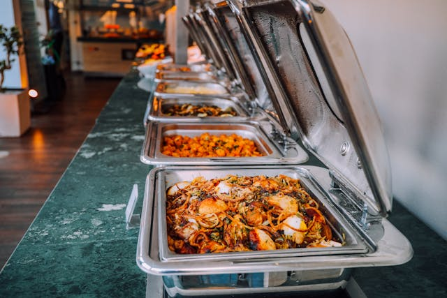

Forest Group
Najpiękniejszy park w Twojej okolicy!
Demo
Warszty w parku
Nasze warsztaty to świetna okazja do nauki i rozwoju w otoczeniu natury. Oferujemy zajęcia dla różnych grup wiekowych, prowadzone przez profesjonalnych instruktorów.
- Warsztaty Fotograficzne: Naucz się podstaw fotografii i uchwyć piękno parku. Idealne dla początkujących miłośników zdjęć przyrody.
- Warsztaty Artystyczne: Twórz dzieła inspirowane naturą – malowanie, kolaże i rzeźba w plenerze.
- Warsztaty Ekologiczne: Dowiedz się, jak dbać o środowisko poprzez recykling i inne praktyczne działania.
Pikniki w Parku
Zapraszamy na darmowe pikniki, idealne dla rodzin, firm i przyjaciół. Wybierz swoje miejsce i ciesz się relaksem na świeżym powietrzu.
- Piknik Rodzinny: Darmowe gry terenowe dla dzieci. Opcje dodatkowe: wypożyczenie koców i koszy piknikowych.
- Piknik Firmowy: Doskonała okazja do integracji zespołu. Możliwość wynajmu sprzętu sportowego i organizacji ognisk.
- Piknik z Przyjaciółmi: Darmowy relaks na świeżym powietrzu. Istnieje możliwość zamówienia akcesoriów piknikowych.
Standard
Oprócz wszystkich opcji dostępnych w pakiecie Demo, pakiet Standard udostępnia sprzęt wodny, dzięku któremu możemu poruszać się po parku, odpocząć lub po prostu podziwiać naturę!
Dostęp do sprzętu wodnego
- Kajaki - Goście mają możliwość bezpłatnego wypożyczenia kajaków lub canoe na określony czas. Dostęp do spokojnych akwenów wodnych, gdzie można zrelaksować się i pływać po jeziorach znajdujących się na terenie parku.
- Rowery wodne - W ofercie dostępne są rowery wodne. Goście mogą korzystać z nich przez wyznaczony czas, co umożliwia rekreacyjne spędzenie czasu na wodzie z rodziną lub przyjaciółmi.
- Deski SUP - Oferta obejmuje dostęp do desek SUP, które są świetnym sposobem na spędzenie aktywnego czasu na wodzie. Uczestnicy mogą uczyć się utrzymywania równowagi na wodzie, przemieszczając się po spokojnych wodach parku.
- Łodzie wiosłowe - Możliwość wynajmu niewielkich łodzi wiosłowych, które goście mogą sami sterować. Łodzie te są idealne do spokojnych wypraw po jeziorach na terenie parku.
Premium
Wybierając ofertę Premium, zyskujesz dostęp do ekskluzywnej strefy VIP, stworzonej z myślą o tych, którzy cenią sobie najwyższy komfort i prywatność. To doskonała okazja, aby uczynić swoją wizytę w naszym parku jeszcze bardziej wyjątkową i relaksującą. Strefa VIP to luksusowe przestrzenie, indywidualna obsługa i dodatkowe udogodnienia, które zapewnią Ci niezapomniane wrażenia.
Co obejmuje dostęp do strefy VIP?
- Prywatne strefy relaksu - Korzystaj z wydzielonych, zacisznych miejsc przeznaczonych wyłącznie dla gości VIP. Czekają na Ciebie wygodne leżaki, hamaki, oraz osłonięte altany.
- Indywidualna obsługa - W strefie VIP masz do dyspozycji osobisty personel, który zadba o Twoje potrzeby. Od serwowania napojów i przekąsek po pomoc przy organizacji dodatkowych atrakcji.
- Dedykowany catering - Ekskluzywne menu dostępne tylko dla gości VIP, z możliwością zamówienia dań i napojów bezpośrednio do swojej prywatnej strefy. Od świeżych soków po wykwintne przekąski.
- Szybki dostęp do atrakcji: - Skorzystaj z priorytetowego dostępu do wybranych atrakcji w parku, bez konieczności stania w kolejkach. Twój czas jest dla nas najważniejszy!